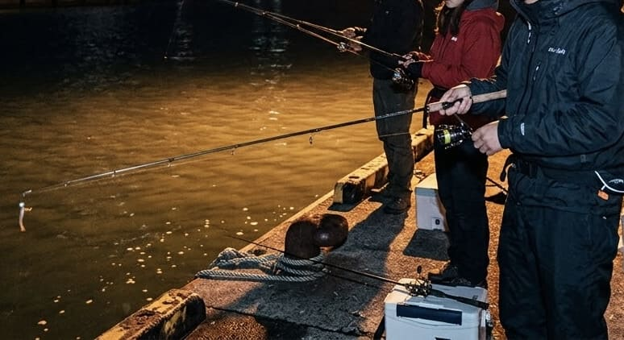
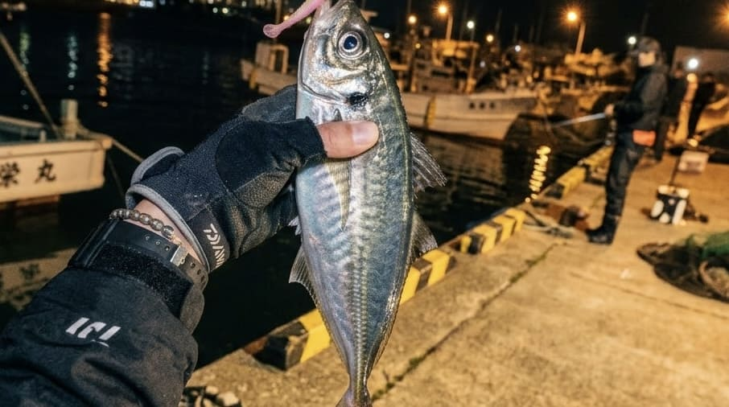

アジング入門｜ルアーでアジを狙うための考え方と実践テクニック

アジングは、小さなワームと軽量ジグヘッドを使ってアジを狙うルアーフィッシングです。「アジならサビキで簡単に釣れるのに、なぜわざわざルアーで狙うのか？」と思う方もいるかもしれません。しかし、実際にアジングを始めてみると、その面白さは単に魚を釣ることだけでなく、その日の「正解」を探していく過程にあることが分かります。どの深さにアジがいるのか。どのくらいの速さでルアーを動かすのか。そして、手元に伝わったほんの小さな違和感がアタリなのか。海の状況を観察しながらルアーを微調整し、アジがルアーを食う条件を自ら見つけ出すことこそが、アジングの大きな魅力です。
1. まず覚えたい「レンジ」とジグヘッドの考え方
アジングで最初に身につけたいのが、ルアーが泳ぐ水深である「レンジ」を意識することです。アジの群れが同じ場所にいても、時間や潮、ベイト（エサ）の状態によって泳いでいる深さが変わります。
カウントは「水深計」ではなく「再現装置」
そこで便利なのが、ルアーを着水させてから「1、2、3……」と沈める時間を数えるカウントダウンです。重要なのは「5カウント＝水深5m」と正確な深さを知ることではなく、「5カウントで釣れた」という事実を元に、次のキャストでも同じレンジを再現できるようにすることです。
ジグヘッドの重さは飛距離だけで決めない
アジングでは0.5g前後から1g以上のジグヘッドを幅広く使用しますが、「遠くに飛ばしたいから重くする」という選び方は避けましょう。重さが変われば、沈下速度や操作感、潮への乗り方まで変わります。「釣れないから軽くする」のではなく、「今の海でルアーを思い通りに操作できる重さ」を選ぶことが重要です。
2. アクションのキモは「フォール」にあり
アジングにおいて非常に重要なのが、ルアーを沈ませる「フォール」の動作です。アジは動いているルアーよりも、動きが止まって沈み始めた瞬間に食ってくることが多く、ここが最大の食わせの間になります。
フリーフォールとテンションフォール
ラインを自然に送り出すフリーフォールと、ラインを張った状態で沈ませるテンションフォールがあります。同じジグヘッドでもラインの張り方で動きが変わるため、釣れない時はルアーを変える前に、フォールのさせ方を変えてみるのが有効です。
「ただ巻き」と「リフト＆フォール」
細かくロッドを動かすイメージが強いアジングですが、アジが小魚を追っている時は、一定速度で巻く「ただ巻き」が非常に強いことがあります。一方、アジが中層から底付近にいる時は、ロッドを軽く持ち上げてルアーを浮かせ、再び沈ませる「リフト＆フォール」で縦方向に探るのが効果的です。

3. アタリの察知とタックル選び
アジング初心者が苦労しやすいのがアタリの判断です。「ゴンッ」という明確な感触だけでなく、「フッと軽くなる」「急に重くなる」「カウントが止まる」など、予定していた動きと違う違和感はすべてアタリの可能性があります。状況に合わせて、即座にアワセて「掛ける」か、テンションを保って針を「乗せる」かを使い分けましょう。
ワームとラインの選び方
ワームは色に注目しがちですが、長さや太さ、テールの形など「アジが今何を食べているか」を基準に選ぶことが重要です。また、ラインは「ルアーの状態を手元に伝えるセンサー」です。操作感度が高く軽量リグに向くエステル、飛距離重視のPE、根ズレに強く扱いやすいフロロカーボンなど、特性を理解して選択します。
4. 状況別ポイント攻略（時間帯・潮・風）
常夜灯とデイアジング
夜間は常夜灯が定番ですが、ライトの真下だけでなくプランクトンが集まりやすい「明暗の境界」や「暗い側」を探るのが基本です。また、昼間のデイアジングでは、ベイトの群れや潮目、海底の地形など目視できる情報を活用してアジの居場所をダイレクトに推測できます。
ドリフトと風対策
潮の流れにルアーを乗せて自然に流す「ドリフト」は、アジが待つ場所へルアーを送り届ける高等テクニックです。また、風が強い日はジグヘッドを重くするだけでなく、風を背負える立ち位置を探すなど、「ラインをどう水面に置くか」まで考える必要があります。
5. アジングは「観察→仮説→検証」の釣り
釣れない時、すぐにルアーを交換するのではなく、「アジはいるか」「レンジや速度は合っているか」「フォールは適切か」と段階的に条件を疑うことが大切です。
そして、1匹釣れたらすぐに次を投げるのではなく、「どのレンジで、どんなアクションで食ったか」を思い出し、次のキャストで同じ条件を再現してみましょう。再現できれば、その1匹は「偶然」ではなく「パターン」になります。
手元に伝わる小さな違和感を見逃さず、海の中を想像しながらルアーを操作する。その1匹を偶然で終わらせず、再現できるパターンへ変えていくことこそが、アジングという釣りの奥深さなのです。
📍 関東の生息・釣果スポット
※マップ上の赤いドットが釣れるポイントです。